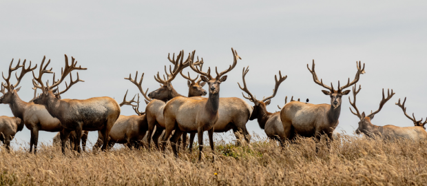

Cervo Canadense
da família cervidaeO uapiti ou cervo-canadense (Cervus canadensis) é uma espécie de veado encontrado na Ásia e noroeste da América do Norte. Alguns pesquisadores a consideram uma subespécie do veado-vermelho (Cervus elaphus canadensis), mas estudos genéticos recentes indicam tratar-se de uma espécie separada.
O nome uapiti significa "garupa branca" e é derivado de uma língua nativa da América do Norte - o Shawnee - pertencente à família das Línguas algonquinas.
O uapiti é um mamífero artiodáctilo da família Cervidae. Apesar de semelhante ao veado-vermelho europeu, o uapiti é maior que este: os machos pesam em média 320 kg e as fêmeas 225 kg. A altura no garrote alcança os 1,5 m e o comprimento chega a 2,5 m nos machos e 2,0 m nas fêmeas.
Além de serem maiores que as fêmeas, os machos se diferenciam por terem uma galhada, que cresce a partir da primavera e que cai no inverno. As galhadas ramificadas são usadas pelos machos para intimidar e lutar contra os rivais na época do acasalamento, no outono e início do inverno. Nessa época os machos adultos dominam grupos de até 20 fêmeas, os haréns. Também nessa época se escutam as características vocalizações dos machos, usados para atrair as fêmeas. Os filhotes, geralmente um por fêmea, nascem na primavera. Fora do período de formação de haréns, os uapitis vivem em grupos de indivíduos do mesmo sexo.
"How can a deer tell when a leaf falls silent in the forest? She hears it breathing differently."